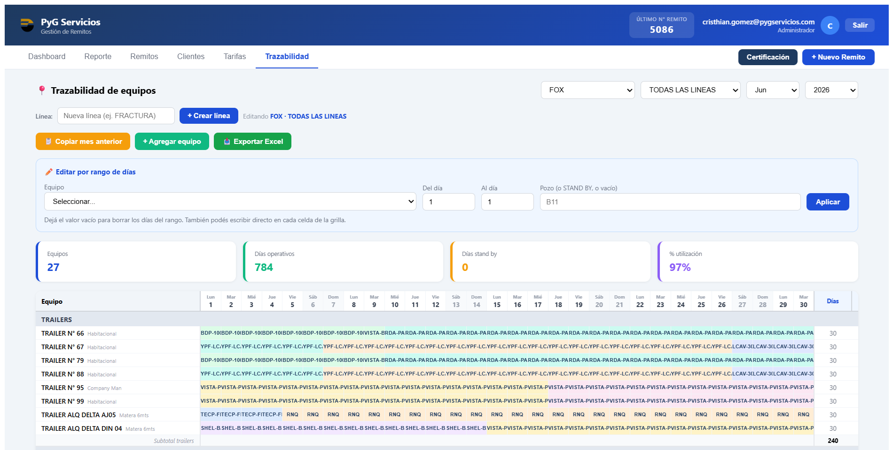
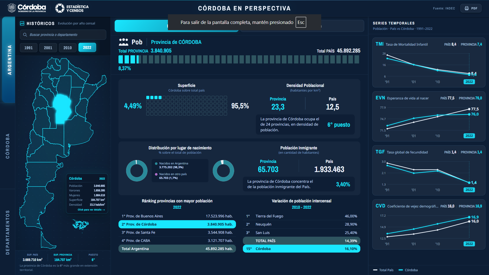
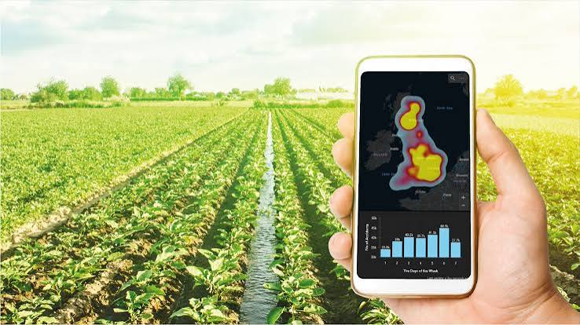

Sistema de gestión de tickets
Aplicación web desarrollada para facilitar la carga y organización de tickets, permitiendo registrar información, adjuntar documentación y asignar los gastos correspondientes.

Morena Silvetti
Cada proyecto representa una oportunidad para aprender algo nuevo, resolver un problema y llevar una idea desde el concepto hasta una solución funcional.
Aplicación web desarrollada para facilitar la carga y organización de tickets, permitiendo registrar información, adjuntar documentación y asignar los gastos correspondientes.

Proyecto orientado a integrar datos e información territorial para facilitar el análisis y la visualización de indicadores de Córdoba.

Exploraciones y desarrollos relacionados con sistemas de información geográfica, visualización de datos y análisis territorial.

Este espacio va a seguir creciendo junto conmigo.